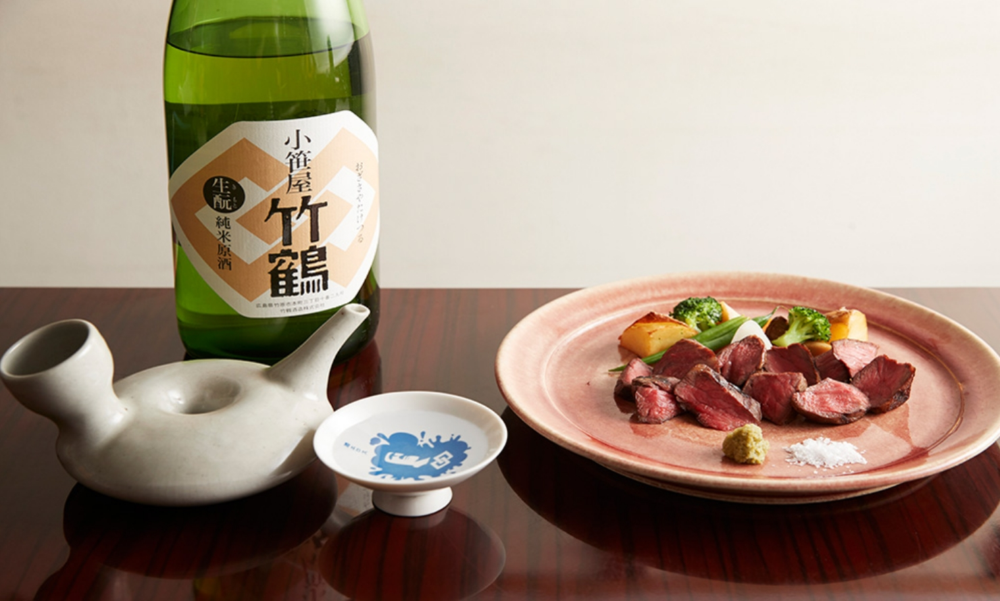
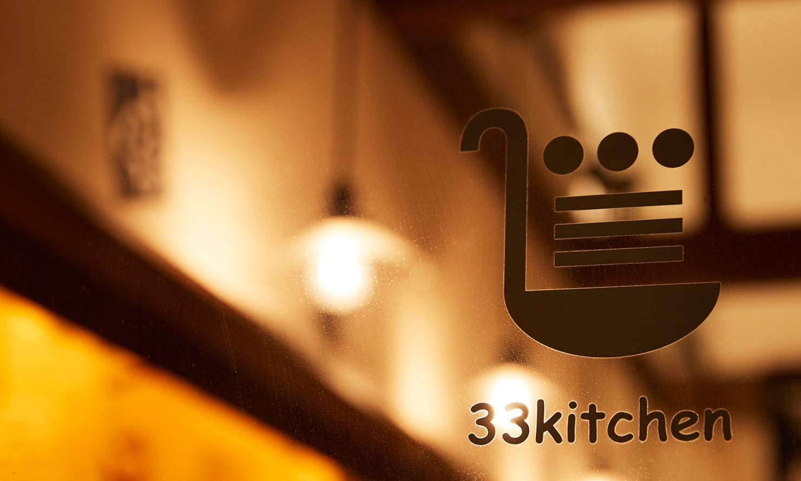
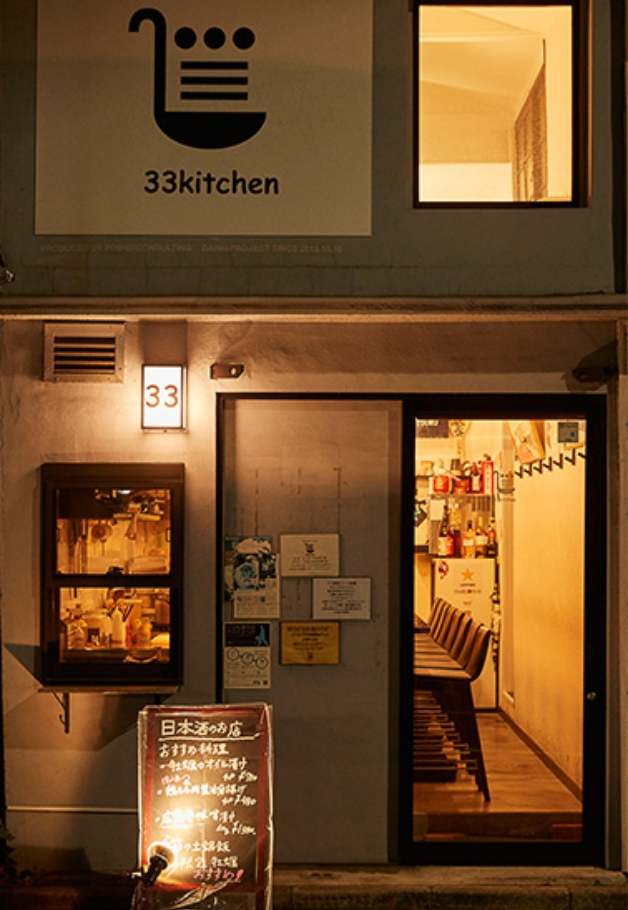
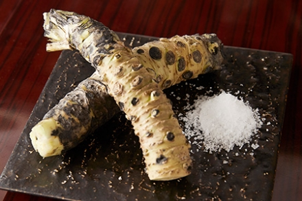
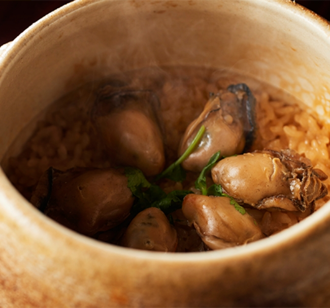
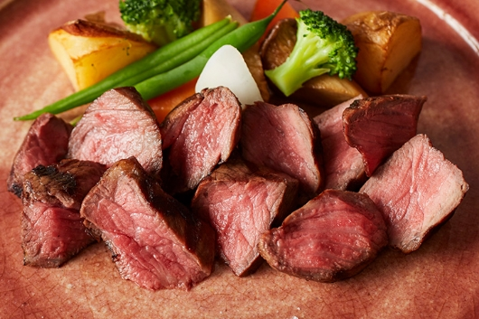
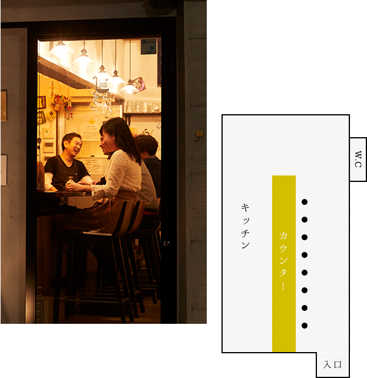

カウンター8席のみの
小さなお店。
笑顔溢れる空間は、
アットホームで心地良い。

カウンター8席
人が集う心地良い空間
神楽坂駅、飯田橋駅周辺のおしゃれな居酒屋「ミーサンキッチン（33kitchen）」はカウンターのみ8席。都会の喧騒を忘れさせる大人の隠れ家のような空間です。
当店は「瀬戸内を感じさせるお店」というコンセプトのもと、一般にはあまり出回らない希少な瀬戸内の日本酒を取り揃えております。
店内に広がるのは、お客様同士の会話や、お客様とスタッフとの楽しいおしゃべり、自然と溢れる笑顔…。そんなアットホームで、居心地の良い空間です。
食材・産地を大事に。
思いの詰まった
33kitchenの料理
当店が大事にする“素材へのこだわり”は、「生産者さんの想いを皆様へ伝えていく」という店主の想いから来ています。様々な生産者さんとつながりがあり、その素材がどんな環境で作られているのか、そのバックグラウンドを重視して仕入れております。




駅から少し歩いて
神楽坂駅、飯田橋の駅から少し離れた場所で、居酒屋「33kitchen(ミーサンキッチン）」はひっそりと明かりを灯しております。カウンター8席のみのこぢんまりした店内は、今日も笑顔の絶えない空間です。デートのディナーや一人飲み、夜ご飯、2軒目利用など、様々なシーンでお使いください。